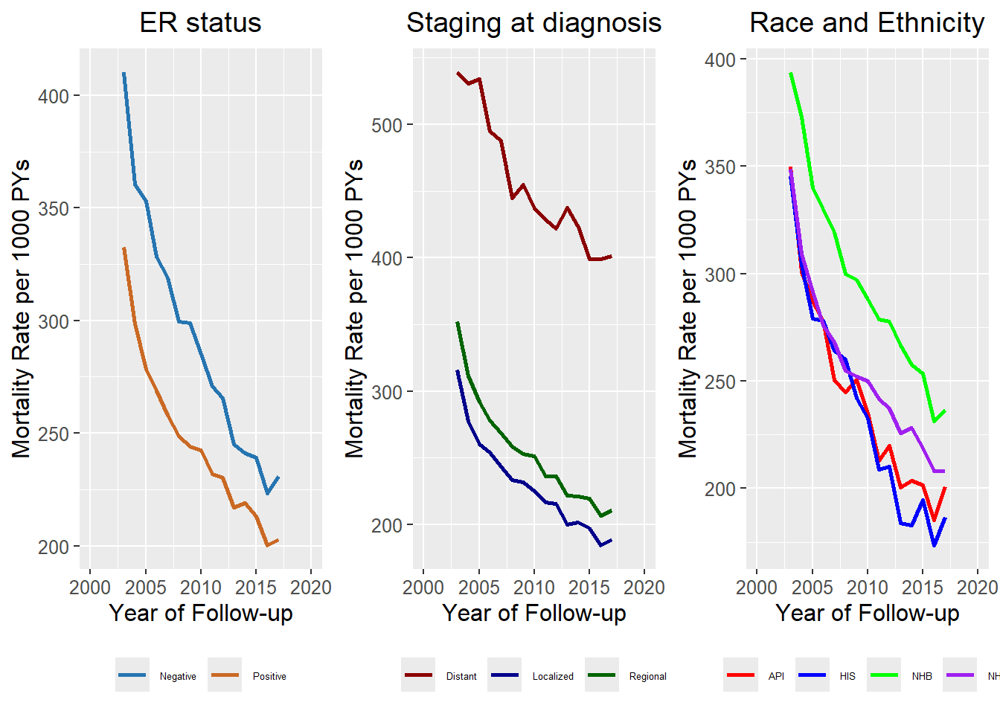
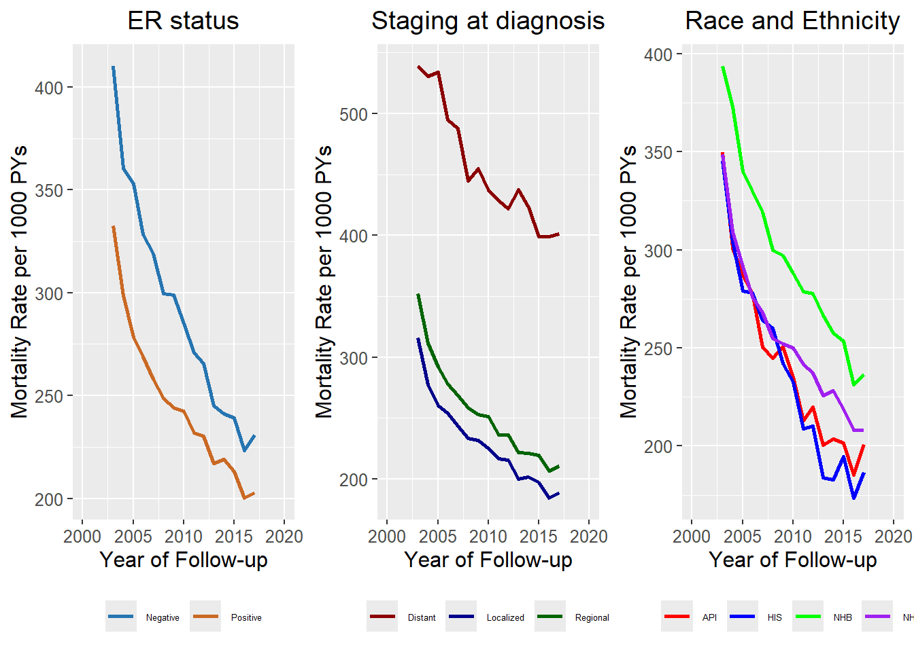
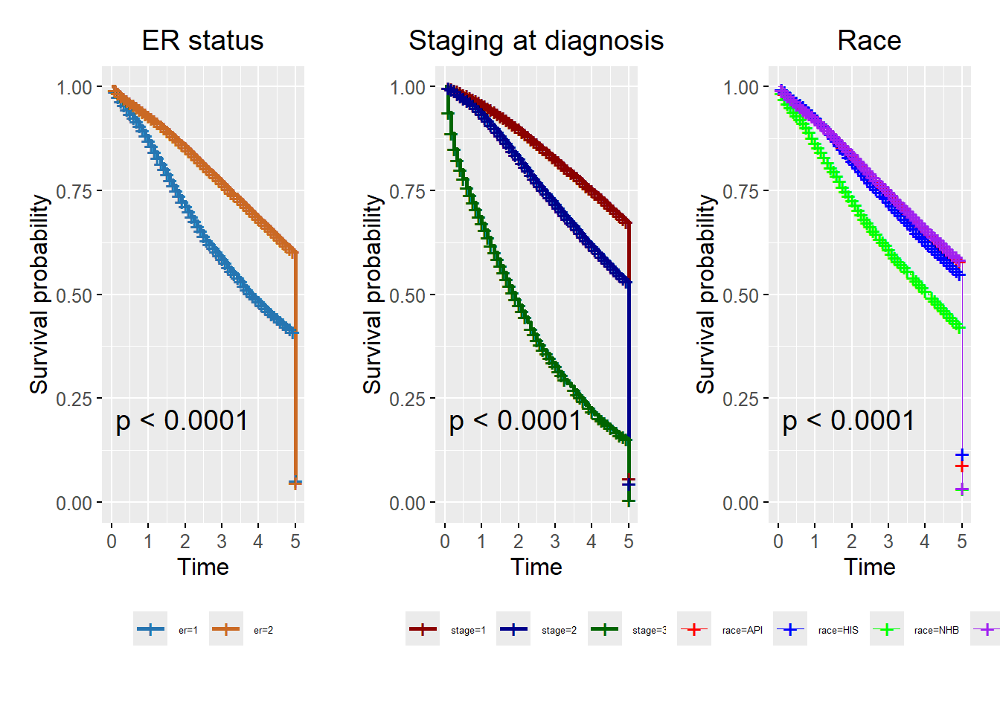
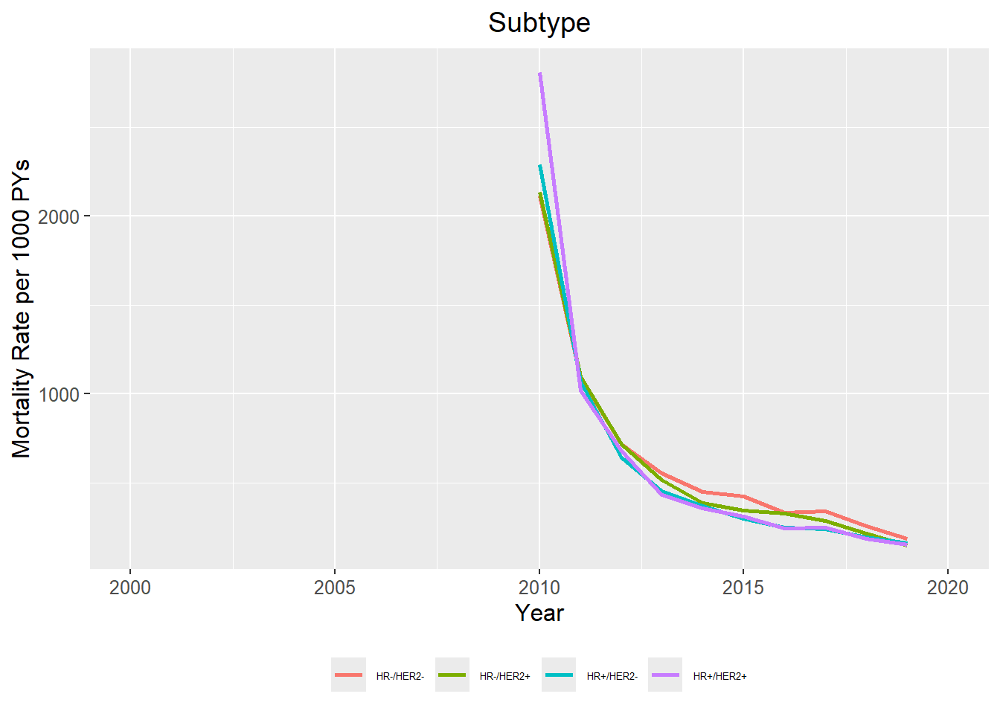
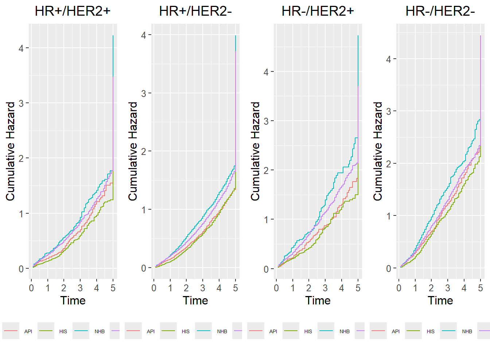

# Arrange the plots in a grid
grid.arrange(plot_a, plot_b, plot_c, widths = c(3, 3, 3), ncol = 3)
A visual inspection of the rates in this cohort has shown an “unrealistic drop” in mortality rates from 1992 to 2002 and in 2018 to 2019. [To investigate], a cut point was decided from 2003 to 2017.
** Ascertainment incomplete? ** incoplete follow-up?
All-cause mortality rates per 1000 PYs from 2003 to 2017.
# Arrange the plots in a grid
grid.arrange(plot_a, plot_b, plot_c, widths = c(3, 3, 3), ncol = 3)
Survival probability (Kaplan-Maier) for malignant breast cancer by er, stage and race and ethnicity.
grid.arrange(a1$plot, a2$plot, a3$plot, ncol = 3)
| coef | exp(coef) | se(coef) | z | Pr(>|z|) | |
|---|---|---|---|---|---|
| age | 0.0192469 | 1.0194333 | 0.0002849 | 67.566188 | 0 |
| er | -0.3601357 | 0.6975816 | 0.0087734 | -41.048549 | 0 |
| stage2 | 0.2999925 | 1.3498487 | 0.0076713 | 39.105853 | 0 |
| stage3 | 1.3628615 | 3.9073582 | 0.0114748 | 118.770248 | 0 |
| raceAPI | -0.0857517 | 0.9178221 | 0.0126953 | -6.754586 | 0 |
| raceHIS | -0.1049025 | 0.9004123 | 0.0121632 | -8.624591 | 0 |
| raceNHB | 0.2463018 | 1.2792856 | 0.0119365 | 20.634364 | 0 |
*er (Positive): Represents the effect of ER (Positive) on the hazard ratio
*stage2 (Regional); stage3(Distant)

